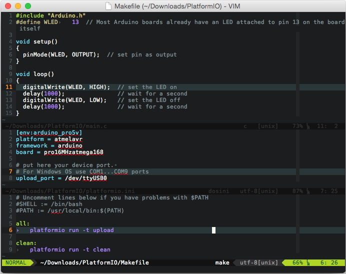

Vim¶
Vim is an open-source, powerful and configurable text editor. Vim is designed for use both from a command-line interface and as a standalone application in a graphical user interface.
Integration¶
Integration process consists of these steps:
Open system Terminal and install PIO Core (CLI)
Create new folder for your project and change directory (
cd) to itGenerate a project using PIO Core Project Generator (
pio project init --ide)Import project in IDE.
Project Generator¶
Choose board ID using pio boards or Embedded Boards Explorer
command and generate project via pio project init --ide command:
pio project init --ide vim --board <ID>
Warning
The libraries which are added, installed or used in the project after generating process won’t be reflected in IDE. To fix it you need to reinitialize project using pio project init (repeat it).
Recommended bundles:
Put to the project directory Makefile wrapper with contents:
# Uncomment lines below if you have problems with $PATH
#SHELL := /bin/bash
#PATH := /usr/local/bin:$(PATH)
all:
pio -f -c vim run
upload:
pio -f -c vim run --target upload
clean:
pio -f -c vim run --target clean
program:
pio -f -c vim run --target program
uploadfs:
pio -f -c vim run --target uploadfs
update:
pio -f -c vim update
Pre-defined targets:
Build- Build project without auto-uploadingClean- Clean compiled objects.Upload- Build and upload (if no errors)Upload using Programmersee Upload using ProgrammerUpload SPIFFS imagesee Using FilesystemUpdate platforms and libraries- Update installed platforms and libraries via pio update.
Now, in VIM cd /path/to/this/project and press Ctrl+B or Cmd+B
(Mac). PIO should compile your source code from the src directory,
make firmware and upload it.
Note
If hotkey doesn’t work for you, try to add this line
nnoremap <C-b> :make<CR> to ~/.vimrc